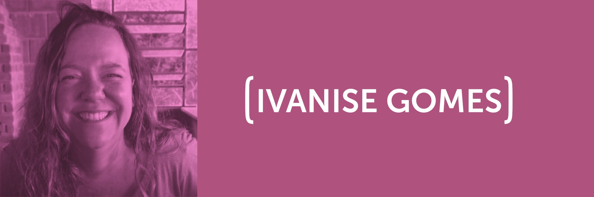
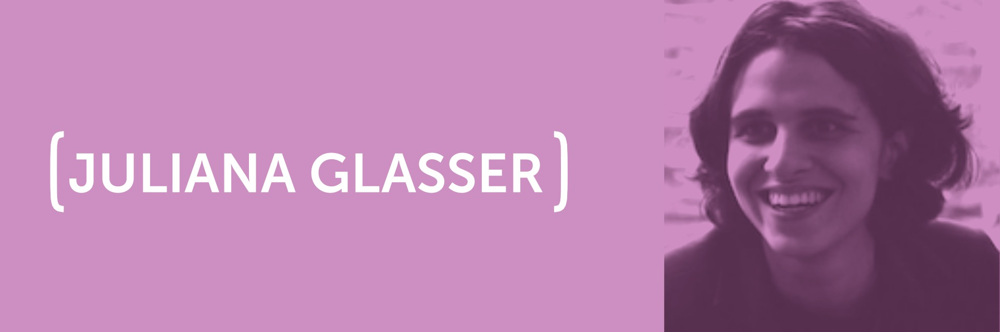
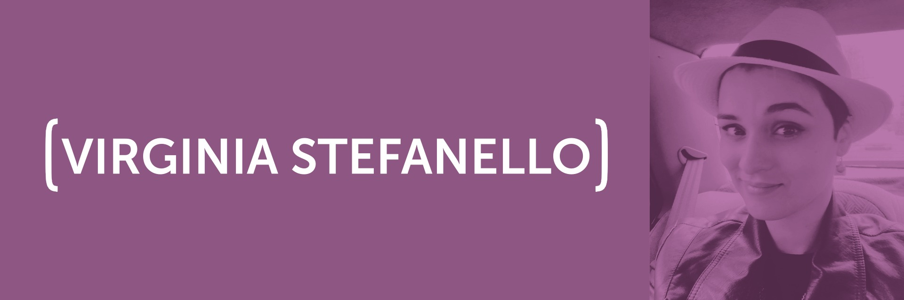
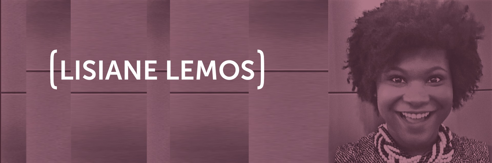
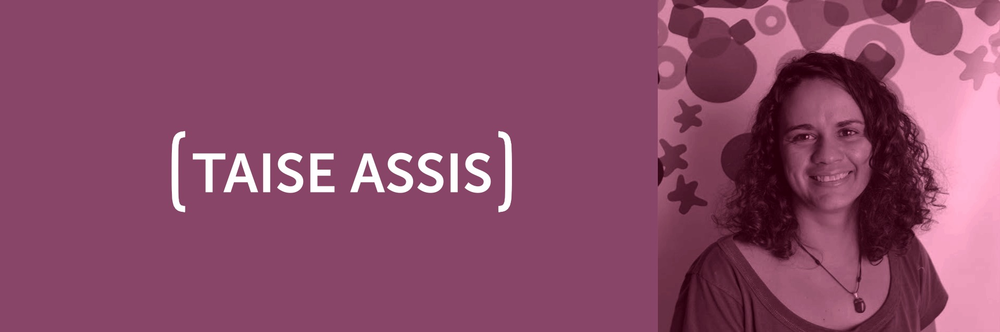

Design For All
[INSCRIÇÕES ENCERRADAS.]
A UPWIT(Unlocking the Power of Women in Technology) estimula a participação feminina na área de tecnologia por meio da criação de experiências. A cada encontro, conduzimos a discussão de um tema por meio das percepções de quatro convidadas e da promoção de uma experiência. Os painéis são dinâmicos e interativos, enquanto a parte prática propõe que as participantes se envolvam ativamente com o tema debatido. Esses encontros geram insights coletivos de produtos e serviços trazendo a perspectiva de gênero como centro da inovação, além do fortalecimento das mulheres no setor de tecnologia.
[LINE-UP]
- 09h - 09h45: Recepção + Apresentação UP[W]IT
- 09h45 - 10h: Check-in: Quebra-gelo perguntas
- 10h - 11h40: Aquário com as painelistas
- 11h40 - 12h: Apresentação da ThoughtWorks
- 12h - 13h: Brunch
- 13h - 15h30: Workshop (inovações de gênero em produtos / serviços)
- 15h30 - 15h45: Break
- 15h45 - 18h: Workshop (inovações de gênero em produtos / serviços) - fechamento
- 18h - 18h15: Check Out + Aplicação de pesquisa
[50% INSPIRAÇÃO 50% TRANSPIRAÇÃO]
[PARTE INSPIRAÇÃO]
Na parte da manhã teremos um painel em formato de Aquário (Fishbowl) onde as painelistas e as participantes irão trocar informações e experiências sobre inovação e diversidade e como equipes mais inclusivas podem produzir produtos e serviços mais inovadores. Conheça as painelistas:
Ivanise é profissional de TI há 24 anos, iniciou a carreira como desenvolvedora (C/C++) e se especializou em Six Sigma, Gestão de Projetos e Melhoria de Processos. Atualmente atua como Business Relationship Manager para LATAM na Eaton e lidera o WAVE (grupo de inclusão de mulheres na liderança) para América do Sul e Central.
Juliana é programadora e maker, tem como missão transformar a vida das pessoas por meio da tecnologia. Começou sua carreira como garçonete de restaurante e por meio da programação conseguiu trabalhar em grandes empresas e fundar seus dois negócios: a Carambola e o Engenho Maker.
Virginia é designer na ThoughtWorks Brasil, já passou por diversas startups e atualmente sua missão é desenhar melhores experiências para ferramentas open source relacionadas à privacidade. É vegetariana, feminista orgulhosa e a mais recente entusiasta de chapéus
Lisiane é representante comercial na Microsoft com MBA em Gestão de Tecnologia da Informação pela FIAP. É co-fundadora da Rede de Profissionais Negros e desde 2003 desenvolve atividades relacionadas à erradicação da discriminação racial.
Apresentação ThoughtWorks
Nessa palestra, a diretora de Justiça Social e Econômica da ThoughtWorks, Taise Assis, fará uma apresentação sobre "Cultura, Diversidade e Inclusão na Tecnologia". Ela é baiana, adora acarajé e acredita que o mundo pode ser melhor! Já foi dev, Q&A, costumava ser BA e atualmente está como diretora de de Justiça Social e Econômica na ThoughtWorks
[PARTE TRANSPIRAÇÃO]
Conduzido pelo Coletivo Mola, na parte da tarde teremos uma atividade mais mão na massa, onde as participantes, divididas em equipes multidisciplinares, darão inputs e insights sobre os aplicativos Radar Parlamentar, Desquebre e o Diaríssima com o objetivo de valorizar a inovação pela diversidade. Ao final do dia será feita uma apresentação com os resultados colhidos de cada mesa.